21 Smarter heating
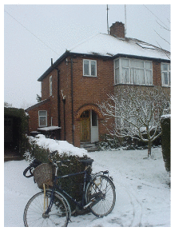
Figure 21.1. My house.
In the last chapter, we learned that electrification could shrink transport’s energy consumption to one fifth of its current levels; and that public transport and cycling can be about 40 times more energy-efficient than cardriving. How about heating? What sort of energy-savings can technology or lifestyle-change offer?
The power used to heat a building is given by multiplying together three quantities:
\[ \begin{matrix} {\text{power\ used~}\phantom{\text{AAAAAAAAAAAAAAAAAAAAAAAA}}} \\ {= \frac{\text{average\ temperature\ difference~} \times \text{~leakiness\ of\ building}}{\text{efficiency\ of\ heating\ system}}} \\ \end{matrix} \]
Let me explain this formula (which is discussed in detail in Chapter E) with an example. My house is a three-bedroom semi-detached house built about 1940 (figure 21.1). The average temperature difference between the inside and outside of the house depends on the setting of the thermostat and on the weather. If the thermostat is permanently at 20 °C, the average temperature difference might be 9 °C. The leakiness of the building describes how quickly heat gets out through walls, windows, and cracks, in response to a temperature difference. The leakiness is sometimes called the heat-loss coefficient of the building. It is measured in kWh per day per degree of temperature difference. In Chapter E, I calculate that the leakiness of my house in 2006 was 7.7 kWh/d/°C. The product
average temperature difference × leakiness of building
is the rate at which heat flows out of the house by conduction and ventilation. For example, if the average temperature difference is 9 °C then the heat loss is
9 °C × 7.7 kWh/d/°C ≅ 70 kWh/d.
Finally, to calculate the power required, we divide this heat loss by the efficiency of the heating system. In my house, the condensing gas boiler has an efficiency of 90%, so we find:
\[ \text{power\ used~} = \ \frac{\text{9~°C~} \times \text{~7.7\ kWh/d/°C}}{\text{0.9}}\ = \text{~77\ kWh/d}\text{.} \]
That’s bigger than the space-heating requirement we estimated in Chapter 7. It’s bigger for two reasons: first, this formula assumes that all the heat is supplied by the boiler, whereas in fact some heat is supplied by incidental heat gains from occupants, gadgets, and the sun; second, in Chapter 7 we assumed that a person kept just two rooms at 20 °C all the time; keeping an entire house at this temperature all the time would require more.
OK, how can we reduce the power used by heating? Well, obviously, there are three lines of attack.
- Reduce the average temperature difference. This can be achieved by turning thermostats down (or, if you have friends in high places, by changing the weather).
- Reduce the leakiness of the building. This can be done by improving the building’s insulation – think triple glazing, draught-proofing, and fluffy blankets in the loft – or, more radically, by demolishing the building and replacing it with a better insulated building; or perhaps by living in a building of smaller size per person. (Leakiness tends to be bigger, the larger a building’s floor area, because the areas of external wall, window, and roof tend to be bigger too.)
- Increase the efficiency of the heating system. You might think that 90% sounds hard to beat, but actually we can do much better.
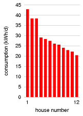
Figure 21.2. Actual heat consumption in 12 identical houses with identical heating systems. All houses had floor area 86 m2 and were designed to have a leakiness of 2.7 kWh/d/°C. Source: Carbon Trust (2007).
Cool technology: the thermostat
The thermostat (accompanied by woolly jumpers) is hard to beat, when it comes to value-for-money technology. You turn it down, and your building uses less energy. Magic! In Britain, for every degree that you turn the thermostat down, the heat loss decreases by about 10%. Turning the thermostat down from 20 °C to 15 °C would nearly halve the heat loss. Thanks to incidental heat gains by the building, the savings in heating power will be even bigger than these reductions in heat loss.
Unfortunately, however, this remarkable energy-saving technology has side-effects. Some humans call turning the thermostat down a lifestyle change, and are not happy with it. I’ll make some suggestions later about how to sidestep this lifestyle issue. Meanwhile, as proof that “the most important smart component in a building with smart heating is the occupant,” figure 21.2 shows data from a Carbon Trust study, observing the heat consumption in twelve identical modern houses. This study permits us to gawp at the family at number 1, whose heat consumption is twice as big as that of Mr. and Mrs. Woolly at number 12. However, we should pay attention to the numbers: the family at number 1 are using 43 kWh per day. But if this is shocking, hang on – a moment ago, didn’t I estimate that my house might use more than that? Indeed, my average gas consumption from 1993 to 2003 was a little more than 43 kWh per day (figure 7.10), and I thought I was a frugal person! The problem is the house. All the modern houses in the Carbon Trust study had a leakiness of 2.7 kWh/d/°C, but my house had a leakiness of 7.7 kWh/d/°C! People who live in leaky houses…
The war on leakiness
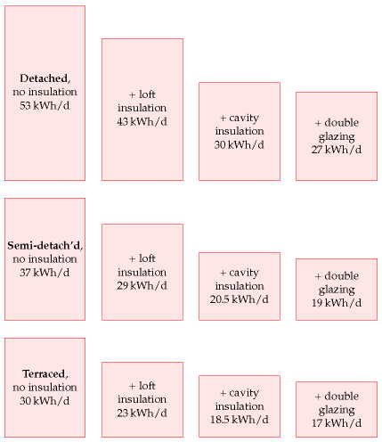
Figure 21.3. Estimates of the space heating required in a range of UK houses. From Eden and Bending (1985).
What can be done with leaky old houses, apart from calling in the bulldozers? Figure 21.3 shows estimates of the space heating required in old detached, semi-detached, and terraced houses as progressively more effort is put into patching them up. Adding loft insulation and cavity-wall insulation reduces heat loss in a typical old house by about 25%. 1 Thanks to incidental heat gains, this 25% reduction in heat loss translates into roughly a 40% reduction in heating consumption.
Let’s put these ideas to the test.
A case study
I introduced you to my house in chapter 7. Let’s pick up the story. In 2004 I had a condensing boiler installed, replacing the old gas boiler. (Condensing boilers use a heat-exchanger to transfer heat from the exhaust gases to incoming air.) At the same time I removed the house’s hot-water tank (so hot water is now made only on demand), and I put thermostats on all the bedroom radiators. Along with the new condensing boiler came a new heating controller that allows me to set different target temperatures for different times of day. With these changes, my consumption decreased from an average of 50 kWh/d to about 32 kWh/d.
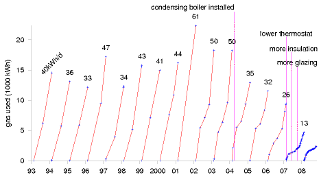
Figure 21.4. My domestic gas consumption, each year from 1993 to 2007. Each line shows the cumulative consumption during one year in kWh. The number at the end of each year is the average rate of consumption for that year, in kWh per day. Meter-readings are indicated by the blue points. Evidently, the more frequently I read my meter, the less gas I use!
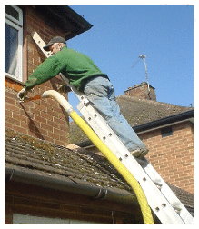
Figure 21.5. Cavity-wall insulation going in.
This reduction from 50 to 32 kWh/d is quite satisfying, but it’s not enough, if the aim is to reduce one’s fossil fuel footprint below one ton of CO2 per year. 32 kWh/d of gas corresponds to over 2 tons CO2 per year.
In 2007, I started paying more careful attention to my energy meters. I had cavity-wall insulation installed (figure 21.5) and improved my loft insulation. I replaced the single-glazed back door by a double-glazed door, and added an extra double-glazed door to the front porch (figure 21.6). Most important of all, I paid more attention to my thermostat settings. This attentiveness has led to a further halving in gas consumption. The latest year’s consumption was 13 kWh/d!
Because this case study is such a hodge-podge of building modifications and behaviour changes, it’s hard to be sure which changes were the most important. According to my calculations (in Chapter E), the improvements in insulation reduced the leakiness by 25%, from 7.7 kWh/d/°C to 5.8 kWh/d/°C. This is still much leakier than any modern house. It’s frustratingly difficult to reduce the leakiness of an already-built house!
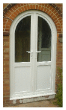
Figure 21.6. A new front door.
So, my main tip is cunning thermostat management. What’s a reasonable thermostat setting to aim for? Nowadays many people seem to think that 17 °C is unbearably cold. However, the average winter-time temperature in British houses in 1970 was 13 °C! 2 A human’s perception of whether they feel warm depends on what they are doing, and what they’ve been doing for the last hour or so. My suggestion is, don’t think in terms of a thermostat setting. Rather than fixing the thermostat to a single value, try just leaving it at a really low value most of the time (say 13 or 15 °C), and turn it up temporarily whenever you feel cold. It’s like the lights in a library. If you allow yourself to ask the question “what is the right light level in the bookshelves?” then you’ll no doubt answer “bright enough to read the book titles,” and you’ll have bright lights on all the time. But that question presumes that we have to fix the light level; and we don’t have to. We can fit light switches that the reader can turn on, and that switch themselves off again after an appropriate time. Similarly, thermostats don’t need to be left up at 20°C all the time.
Before leaving the topic of thermostat settings, I should mention airconditioning. Doesn’t it drive you crazy to go into a building in summer where the thermostat of the air-conditioning is set to 18 °C? These loony building managers are subjecting everyone to temperatures that in wintertime they would whinge are too cold! In Japan, the government’s “CoolBiz” guidelines recommend that air-conditioning be set to 28 °C (82 °F).
Better buildings
If you get the chance to build a new building then there are lots of ways to ensure its heating consumption is much smaller than that of an old building. Figure 21.2 gave evidence that modern houses are built to much better insulation standards than those of the 1940s. But the building standards in Britain could be still better, as Chapter E discusses. The three key ideas for the best results are: (1) have really thick insulation in floors, walls, and roofs; (2) ensure the building is completely sealed and use active ventilation to introduce fresh air and remove stale and humid air, with heat exchangers passively recovering much of the heat from the removed air; (3) design the building to exploit sunshine as much as possible.
The energy cost of heat
So far, this chapter has focused on temperature control and leakiness. Now we turn to the third factor in the equation:
\[ \begin{matrix} {\text{power\ used~}\phantom{\text{AAAAAAAAAAAAAAAAAAAAAAAA}}} \\ {= \frac{\text{average\ temperature\ difference~} \times \text{~leakiness\ of\ building}}{\text{efficiency\ of\ heating\ system}}} \\ \end{matrix} \]
How efficiently can heat be produced? Can we obtain heat on the cheap? Today, building-heating in Britain is primarily delivered by burning a fossil fuel, natural gas, in boilers with efficiencies of 78%–90%. Can we get off fossil fuels at the same time as making building-heating more efficient?
One technology that is held up as an answer to Britain’s heating problem is called “combined heat and power” (CHP), or its cousin, “microCHP.” I will explain combined heat and power now, but I’ve come to the conclusion that it’s a bad idea, because there’s a better technology for heating, called heat pumps, which I’ll describe in a few pages.
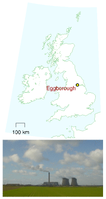
Figure 21.7. Eggborough. Not a power station participating in smart heating.
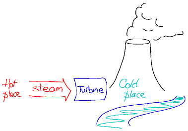
Figure 21.8. How a power station works. There has to be a cold place to condense the steam to make the turbine go round. The cold place is usually a cooling tower or river.
Combined heat and power
The standard view of conventional big centralised power stations is that they are terribly inefficient, chucking heat willy-nilly up chimneys and cooling towers. A more sophisticated view recognizes that to turn thermal energy into electricity, we inevitably have to dump heat in a cold place (figure 21.8). That is how heat engines work. There has to be a cold place. But surely, it’s argued, we could use buildings as the dumping place for this “waste” heat instead of cooling towers or sea water? This idea is called “combined heat and power” (CHP) or cogeneration, and it’s been widely used in continental Europe for decades – in many cities, a big power station is integrated with a district heating system. Proponents of the modern incarnation of combined heat and power, “micro-CHP,” suggest that tiny power stations should be created within single buildings or small collections of buildings, delivering heat and electricity to those buildings, and exporting some electricity to the grid.
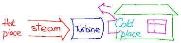
Figure 21.9. Combined heat and power. District heating absorbs heat that would have been chucked up a cooling tower.
There’s certainly some truth in the view that Britain is rather backward when it comes to district heating and combined heat and power, 3 but discussion is hampered by a general lack of numbers, and by two particular errors. First, when comparing different ways of using fuel, the wrong measure of “efficiency” is used, namely one that weights electricity as having equal value to heat. The truth is, electricity is more valuable than heat. Second, it’s widely assumed that the “waste” heat in a traditional power station could be captured for a useful purpose without impairing the power station’s electricity production. This sadly is not true, as the numbers will show. Delivering useful heat to a customer always reduces the electricity produced to some degree. The true net gains from combined heat and power are often much smaller than the hype would lead you to believe.
A final impediment to rational discussion of combined heat and power is a myth that has grown up recently, that decentralizing a technology somehow makes it greener. So whereas big centralized fossil fuel power stations are “bad,” flocks of local micro-power stations are imbued with goodness. But if decentralization is actually a good idea then “small is beautiful” should be evident in the numbers. Decentralization should be able to stand on its own two feet. And what the numbers actually show is that centralized electricity generation has many benefits in both economic and energy terms. Only in large buildings is there any benefit to local generation, and usually that benefit is only about 10% or 20%.
The government has a target for growth of combined heat and power to 10 GW of electrical capacity by 2010, but I think that growth of gas-powered combined heat and power would be a mistake. Such combined heat and power is not green: it uses fossil fuel, and it locks us into continued use of fossil fuel. Given that heat pumps are a better technology, I believe we should leapfrog over gas-powered combined heat and power and go directly for heat pumps.
Heat pumps
Like district heating and combined heat and power, heat pumps are already widely used in continental Europe, but strangely rare in Britain. Heat pumps are back-to-front refrigerators. Feel the back of your refrigerator: it’s warm. A refrigerator moves heat from one place (its inside) to another (its back panel). So one way to heat a building is to turn a refrigerator inside-out – put the inside of the refrigerator in the garden, thus cooling the garden down; and leave the back panel of the refrigerator in your kitchen, thus warming the house up. What isn’t obvious about this whacky idea is that it is a really efficient way to warm your house. For every kilowatt of power drawn from the electricity grid, the back-to-front refrigerator can pump three kilowatts of heat from the garden, so that a total of four kilowatts of heat gets into your house. So heat pumps are roughly four times as efficient as a standard electrical bar-fire. 4 Whereas the bar-fire’s efficiency is 100%, the heat pump’s is 400%. The efficiency of a heat pump is usually called its coefficient of performance or CoP. If the efficiency is 400%, the coefficient of performance is 4.
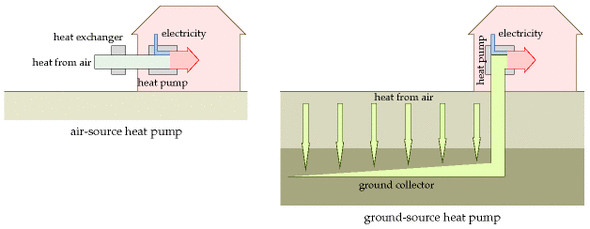
Figure 21.10. Heat pumps.
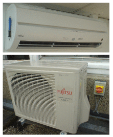
Figure 21.11. The inner and outer bits of an air-source heat pump that has a coefficient of performance of 4. The inner bit is accompanied by a ball-point pen, for scale. One of these Fujitsu units can deliver 3.6 kW of heating when using just 0.845 kW of electricity. It can also run in reverse, delivering 2.6 kW of cooling when using 0.655 kW of electricity.
Heat pumps can be configured in various ways (figure 21.10). A heat pump can cool down the air in your garden using a heat-exchanger (typically a 1-metre tall white box, figure 21.11), in which case it’s called an air-source heat pump. Alternatively, the pump may cool down the ground using big loops of underground plumbing (many tens of metres long), in which case it’s called a ground-source heat pump. Heat can also be pumped from rivers and lakes.
Some heat pumps can pump heat in either direction. When an airsource heat pump runs in reverse, it uses electricity to warm up the outside air and cool down the air inside your building. This is called air-conditioning. Many air-conditioners are indeed heat-pumps working in precisely this way. Ground-source heat pumps can also work as air-conditioners. So a single piece of hardware can be used to provide winter heating and summer cooling.
People sometimes say that ground-source heat pumps use “geothermal energy,” but that’s not the right name. As we saw in Chapter 16, geothermal energy offers only a tiny trickle of power per unit area (about 50 mW/m2), in most parts of the world; heat pumps have nothing to do with this trickle, and they can be used both for heating and for cooling. Heat pumps simply use the ground as a place to suck heat from, or to dump heat into. When they steadily suck heat, that heat is actually being replenished by warmth from the sun.
There’s two things left to do in this chapter. We need to compare heat pumps with combined heat and power. Then we need to discuss what are the limits to ground-source heat pumps.
Heat pumps, compared with combined heat and power
I used to think that combined heat and power was a no-brainer. “Obviously, we should use the discarded heat from power stations to heat buildings rather than just chucking it up a cooling tower!” However, looking carefully at the numbers describing the performance of real CHP systems, I’ve come to the conclusion that there are better ways of providing electricity and building-heating.
I’m going to build up a diagram in three steps. The diagram shows how much electrical energy or heat energy can be delivered from chemical energy. The horizontal axis shows the electrical efficiency and the vertical axis shows the heat efficiency.
The standard solution with no CHP
In the first step, we show simple power stations and heating systems that deliver pure electricity or pure heat.
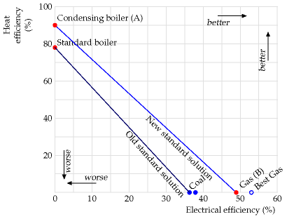
Condensing boilers (the top-left dot, A) are 90% efficient because 10% of the heat goes up the chimney. Britain’s gas power stations (the bottomright dot, B) are currently 49% efficient at turning the chemical energy of gas into electricity. If you want any mix of electricity and heat from natural gas, you can obtain it by burning appropriate quantities of gas in the electricity power station and in the boiler. Thus the new standard solution can deliver any electrical efficiency and heat efficiency on the line A–B by making the electricity and heat using two separate pieces of hardware.
To give historical perspective, the diagram also shows the old standard heating solution (an ordinary non-condensing boiler, with an efficiency of 79%) and the standard way of making electricity a few decades ago (a coal power station with an electrical efficiency of 37% or so).
Combined heat and power
Next we add combined heat and power systems to the diagram. These simultaneously deliver, from chemical energy, both electricity and heat.
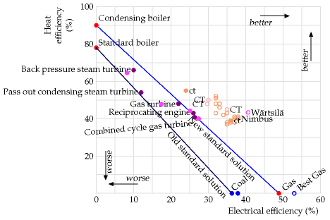
Each of the filled dots shows actual average performances of CHP systems in the UK, grouped by type. The hollow dots marked “CT” show the performances of ideal CHP systems quoted by the Carbon Trust; the hollow dots marked “Nimbus” are from a manufacturer’s product specifications. The dots marked “ct” are the performances quoted by the Carbon Trust for two real systems (at Freeman Hospital and Elizabeth House).
The main thing to notice in this diagram is that the electrical efficiencies of the CHP systems are significantly smaller than the 49% efficiency delivered by single-minded electricity-only gas power stations. So the heat is not a “free by-product.” Increasing the heat production hurts the electricity production.
It’s common practice to lump together the two numbers (the efficiency of electricity production and heat production) into a single “total efficiency” – for example, the back pressure steam turbines delivering 10% electricity and 66% heat would be called “76% efficient,” but I think this is a misleading summary of performance. After all, by this measure, the 90%-efficient condensing boiler is “more efficient” than all the CHP systems! The fact is, electrical energy is more valuable than heat.
Many of the CHP points in this figure are superior to the “old standard way of doing things” (getting electricity from coal and heat from standard boilers). And the ideal CHP systems are slightly superior to the “new standard way of doing things” (getting electricity from gas and heat from condensing boilers). But we must bear in mind that this slight superiority comes with some drawbacks – a CHP system delivers heat only to the places it’s connected to, whereas condensing boilers can be planted anywhere with a gas main; and compared to the standard way of doing things, CHP systems are not so flexible in the mix of electricity and heat they deliver; a CHP system will work best only when delivering a particular mix; this inflexibility leads to inefficiencies at times when, for example, excess heat is produced; in a typical house, much of the electricity demand comes in relatively brief spikes, bearing little relation to heating demand. A final problem with some micro-CHP systems is that when they have excess electricity to share, they may do a poor job of delivering power to the network.
Finally we add in heat pumps, which use electricity from the grid to pump ambient heat into buildings.
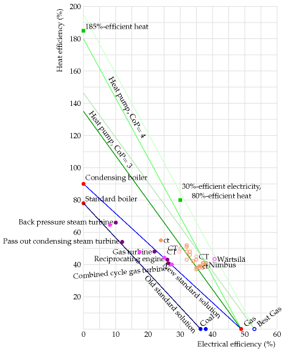
The steep green lines show the combinations of electricity and heat that you can obtain assuming that heat pumps have a coefficient of performance of 3 or 4, assuming that the extra electricity for the heat pumps is generated by an average gas power station or by a top-of-the-line gas power station, and allowing for 8% loss in the national electricity network between the power station and the building where the heat pumps pump heat. The top-of-the-line gas power station’s efficiency is 53%, assuming it’s running optimally. (I imagine the Carbon Trust and Nimbus made a similar assumption when providing the numbers used in this diagram for CHP systems.) In the future, heat pumps will probably get even better than I assumed here. In Japan, thanks to strong legislation favouring efficiency improvements, heat pumps are now available with a coefficient of performance of 4.9.
Notice that heat pumps offer a system that can be “better than 100%-efficient.” For example the “best gas” power station, feeding electricity to heat pumps can deliver a combination of 30%-efficient electricity and 80%-efficient heat, a “total efficiency” of 110%. No plain CHP system could ever match this performance.
Let me spell this out. Heat pumps are superior in efficiency to condensing boilers, even if the heat pumps are powered by electricity from a power station burning natural gas. If you want to heat lots of buildings using natural gas, you could install condensing boilers, which are “90% efficient,” or you could send the same gas to a new gas power station making electricity and install electricity-powered heat pumps in all the buildings; the second solution’s efficiency would be somewhere between 140% and 185%. It’s not necessary to dig big holes in the garden and install underfloor heating to get the benefits of heat pumps; the best air-source heat pumps (which require just a small external box, like an air-conditioner’s) can deliver hot water to normal radiators with a coefficient of performance above 3. The air-source heat pump in figure 21.11 directly delivers warm air to an office.
I thus conclude that combined heat and power, even though it sounds a good idea, is probably not the best way to heat buildings and make electricity using natural gas, assuming that air-source or ground-source heat pumps can be installed in the buildings. The heat-pump solution has further advantages that should be emphasized: heat pumps can be located in any buildings where there is an electricity supply; they can be driven by any electricity source, so they keep on working when the gas runs out or the gas price goes through the roof; and heat pumps are flexible: they can be turned on and off to suit the demand of the building occupants.
I emphasize that this critical comparison does not mean that CHP is always a bad idea. What I’m comparing here are methods for heating ordinary buildings, which requires only very low-grade heat. CHP can also be used to deliver higher-grade heat to industrial users (at 200 °C, for example). In such industrial settings, heat pumps are unlikely to compete so well because their coefficient of performance would be lower.
Limits to growth (of heat pumps)
Because the temperature of the ground, a few metres down, stays sluggishly close to 11 °C, whether it’s summer or winter, the ground is theoretically a better place for a heat pump to grab its heat than the air, which in midwinter may be 10 or 15 °C colder than the ground. So heat-pump advisors encourage the choice of ground-source over air-source heat pumps, where possible. (Heat pumps work less efficiently when there’s a big temperature difference between the inside and outside.)
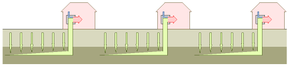
Figure 21.12. How close together can ground-source heat pumps be packed?
However, the ground is not a limitless source of heat. The heat has to come from somewhere, and ground is not a very good thermal conductor. If we suck heat too fast from the ground, the ground will become as cold as ice, and the advantage of the ground-source heat pump will be diminished.
In Britain, the main purpose of heat pumps would be to get heat into buildings in the winter. The ultimate source of this heat is the sun, which replenishes heat in the ground by direct radiation and by conduction through the air. The rate at which heat is sucked from the ground must satisfy two constraints: it must not cause the ground’s temperature to drop too low during the winter; and the heat sucked in the winter must be replenished somehow during the summer. If there’s any risk that the natural trickling of heat in the summer won’t make up for the heat removed in the winter, then the replenishment must be driven actively – for example by running the system in reverse in summer, putting heat down into the ground (and thus providing air-conditioning up top).
| Urban area | Area per person (m2) |
|---|---|
| Bangalore | 37 |
| Manhattan | 39 |
| Paris | 40 |
| Chelsea | 66 |
| Tokyo | 72 |
| Moscow | 97 |
| Taipei | 104 |
| The Hague | 152 |
| San Francisco | 156 |
| Singapore | 156 |
| Cambridge MA | 164 |
| Sydney | 174 |
| Portsmouth | 213 |
Table 21.13. Some urban areas per person.
Let’s put some numbers into this discussion. How big a piece of ground does a ground-source heat pump need? Assume that we have a neighbourhood with quite a high population density – say 6200 people per km2 (160 m2 per person), the density of a typical British suburb. Can everyone use ground-source heat pumps, without using active summer replenishment? A calculation in Chapter E (p303) gives a tentative answer of no: if we wanted everyone in the neighbourhood to be able to pull from the ground a heat flow of about 48 kWh/d per person (my estimate of our typical winter heat demand), we’d end up freezing the ground in the winter. Avoiding unreasonable cooling of the ground requires that the sucking rate be less than 12 kWh/d per person. So if we switch to ground-source heat pumps, we should plan to include substantial summer heat-dumping in the design, so as to refill the ground with heat for use in the winter. This summer heat-dumping could use heat from air-conditioning, or heat from roof-mounted solar water-heating panels. (Summer solar heat is stored in the ground for subsequent use in winter by Drake Landing Solar Community in Canada [www.dlsc.ca].) Alternatively, we should expect to need to use some air-source heat pumps too, and then we’ll be able to get all the heat we want – as long as we have the electricity to pump it. In the UK, air temperatures don’t go very far below freezing, so concerns about poor winter-time performance of air-source pumps, which might apply in North America and Scandinavia, probably do not apply in Britain.
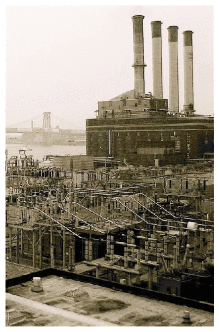
My conclusion: can we reduce the energy we consume for heating? Yes. Can we get off fossil fuels at the same time? Yes. Not forgetting the low-hanging fruit – building-insulation and thermostat shenanigans – we should replace all our fossil-fuel heaters with electric-powered heat pumps; we can reduce the energy required to 25% of today’s levels. Of course this plan for electrification would require more electricity. But even if the extra electricity came from gas-fired power stations, that would still be a much better way to get heating than what we do today, simply setting fire to the gas. Heat pumps are future-proof, allowing us to heat buildings efficiently with electricity from any source.
Nay-sayers object that the coefficient of performance of air-source heat pumps is lousy – just 2 or 3. But their information is out of date. If we are careful to buy top-of-the-line heat pumps, we can do much better. The Japanese government legislated a decade-long efficiency drive that has greatly improved the performance of air-conditioners; thanks to this drive, there are now air-source heat pumps with a coefficient of performance of 4.9; these heat pumps can make hot water as well as hot air. 5
Another objection to heat pumps is “oh, we can’t approve of people fitting efficient air-source heaters, because they might use them for air-conditioning in the summer.” Come on – I hate gratuitous air-conditioning as much as anyone, but these heat pumps are four times more efficient than any other winter heating method! Show me a better choice. Wood pellets? Sure, a few wood-scavengers can burn wood. But there is not enough wood for everyone to do so. For forest-dwellers, there’s wood. For everyone else, there’s heat pumps.
Notes and further reading
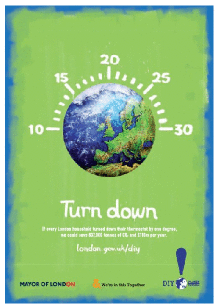
Figure 21.14. Advertisement from the Mayor of London’s “DIY planet repairs” campaign of 2007. The text reads “Turn down. If every London household turned down their thermostat by one degree, we could save 837 000 tons of CO2 and £110m per year.” [london.gov.uk/diy] Expressed in savings per person, that’s 0.12 t CO2 per year per person. That’s about 1% of one person’s total (11 t), so this is good advice. Well done, Ken!
Further reading on heat pumps: European Heat Pump Network
ehpn.fiz-karlsruhe.de/en/, www.kensaengineering.com, www.heatking.co.uk, www.iceenergy.co.uk.
Loft and cavity insulation reduces heat loss in a typical old house by about a quarter. Eden and Bending (1985).↩︎
The average internal temperature in British houses in 1970 was 13 °C! Source: Dept. of Trade and Industry (2002a, para 3.11)↩︎
Britain is rather backward when it comes to district heating and combined heat and power. The rejected heat from UK power stations could meet the heating needs of the entire country (Wood, 1985). In Denmark in 1985, district heating systems supplied 42% of space heating, with heat being transmitted 20 km or more in hot pressurized water. In West Germany in 1985, 4 million dwellings received 7 kW per dwelling from district heating. Two thirds of the heat supplied was from power stations. In Vasteras, Sweden in 1985, 98% of the city’s heat was supplied from power stations.↩︎
Heat pumps are roughly four times as efficient as a standard electrical barfire. See www.gshp.org.uk. Some heat pumps available in the UK already have a coefficient of peformance bigger than 4.0 [yok2nw]. Indeed there is a government subsidy for water-source heat pumps that applies only to pumps with a coefficient of peformance better than 4.4 [2dtx8z]. Commercial ground-source heat pumps are available with a coefficient of performance of 5.4 for cooling and 4.9 for heating [2fd8ar].↩︎
Air-source heat pumps with a coefficient of performance of 4.9… According to HPTCJ (2007), heat pumps with a coefficient of performance of 6.6 have been available in Japan since 2006. The performance of heat pumps in Japan improved from 3 to 6 within a decade thanks to government regulations. HPTCJ (2007) describe an air-source-heat-pump water-heater called Eco Cute with a coefficient of performance of 4.9. The Eco Cute came on the market in 2001. www.ecosystem-japan.com.↩︎